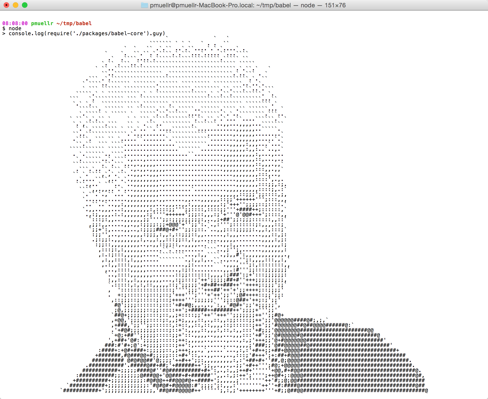

This presentation is an HTML5 website
Press → key to advance.
From my point of view Babel easily can be used from NPM. Therefore, it is necessary to first explain what NPM is. NPM is the default package manager of JavaScript runtime environment for NodeJS. NodeJS as a whole, can be used to develop backend web applications, but the big popularity it has, is because of the ecosystem of tools developed around its package manager - NPM.
Extremely popular as a so called. scaffolding tools. These are tools for rapid generation of skeleton of a typical application. One of them is, for example yeoman:
It supports very large inventory of generators, which you can see here:
Besides generation of startup application, these generators support and useful tools for the further development of the application. For example, as can be seen here:
https://github.com/yeoman/generator-angular#readme
The Generator for AngularJS supports the generation of new controllers, directives, filters, views and so on. Things go much further. Ever since the beginning of the project you already have organized the build process and code minification.
An example of a little thing done with help of yeoman, you can see here: http://gonaumov.github.io/easterEggs/
The code can be seen here: https://github.com/gonaumov/easterEggs
The whole work took me about two hours. I skipped a lot of things - downloading libraries and the structure of the application - controllers, directives, service and so on.
It tends more and more tools to become npm packages. One example of this trend, is - for example jpm. Jpm is a command line tool supported by Mozilla, serves as the development, testing and packaging of supplements browser Mozilla Firefox:
https://developer.mozilla.org/en-US/Add-ons/SDK/Tools/jpm
jpm is the successor of cfx tool that was walking with older versions of Mozila FireFox add-on SDK.
Npm keeps the list of dependencies in .json file called package.json. Here is an example of a typical package.json:
{
"name": "babelpresentation",
"version": "1.0.0",
"description": "babel presentation",
"main": "index.js",
"scripts": {
"test": "echo \"Error: no test specified\" && exit 1"
},
"author": "Georgi Naumov",
"license": "ISC",
"devDependencies": {
"babel-cli": "^6.11.4"
}
}
npm modules are contained in the directory with name node_modules in the same project. If this directory doesn’t exist, command npm install, will download the necessary modules and create the directory.
These days, there was a funny case, when it turned out that there was asci art in babel-core, but it is already removed.
Let’s examine what is in this PR:
https://github.com/babel/babel/pull/3656

Babel is the de facto converter of EcmaScript 6 to 5, with its help we can use EcmaScript 6 standard before it can be maintained at a certain environment.
Babel supports the current version of the EcmaScript - EcmaScript 2015 with the help of syntax transformers. These are plugins that allow you to use the current syntax EcmaScript 2015 right now - without expecting support in browsers. Babel provides us with this by babel-preset-es2015 plugin that combines several things.
Arrows are a function shorthand using the => syntax. They are syntactically similar to the related feature in C#, Java 8 and CoffeeScript. They support both expression and statement bodies. Unlike functions, arrows share the same lexical this as their surrounding code.
var a = () => {};
var a = (b) => b;
const double = [1,2,3].map((num) => num * 2);
console.log(double); // [2,4,6]
var bob = {
_name: "Bob",
_friends: ["Sally", "Tom"],
printFriends() {
this._friends.forEach(f =>
console.log(this._name + " knows " + f));
}
};
console.log(bob.printFriends());
ES2015 classes are a simple sugar over the prototype-based OO pattern. Having a single convenient declarative form makes class patterns easier to use, and encourages interoperability. Classes support prototype-based inheritance, super calls, instance and static methods and constructors.
class SkinnedMesh extends THREE.Mesh {
constructor(geometry, materials) {
super(geometry, materials);
this.idMatrix = SkinnedMesh.defaultMatrix();
this.bones = [];
this.boneMatrices = [];
//...
}
update(camera) {
//...
super.update();
}
static defaultMatrix() {
return new THREE.Matrix4();
}
}
Object literals are extended to support setting the prototype at construction, shorthand for foo: foo assignments, defining methods and making super calls. Together, these also bring object literals and class declarations closer together, and let object-based design benefit from some of the same conveniences.
var obj = {
// Sets the prototype. "__proto__" or '__proto__' would also work.
__proto__: theProtoObj,
// Computed property name does not set prototype or trigger early error for
// duplicate __proto__ properties.
['__proto__']: somethingElse,
// Shorthand for ‘handler: handler’
handler,
// Methods
toString() {
// Super calls
return "d " + super.toString();
},
// Computed (dynamic) property names
[ "prop_" + (() => 42)() ]: 42
};
Template strings provide syntactic sugar for constructing strings. This is similar to string interpolation features in Perl, Python and more. Optionally, a tag can be added to allow the string construction to be customized, avoiding injection attacks or constructing higher level data structures from string contents.
// Basic literal string creation
`This is a pretty little template string.`
// Multiline strings
`In ES5 this is
not legal.`
// Interpolate variable bindings
var name = "Bob", time = "today";
`Hello ${name}, how are you ${time}?`
// Unescaped template strings
String.raw`In ES5 "\n" is a line-feed.`
// Construct an HTTP request prefix is used to interpret the replacements and construction
GET`http://foo.org/bar?a=${a}&b=${b}
Content-Type: application/json
X-Credentials: ${credentials}
{ "foo": ${foo},
"bar": ${bar}}`(myOnReadyStateChangeHandler);
Destructuring allows binding using pattern matching, with support for matching arrays and objects. Destructuring is fail-soft, similar to standard object lookup foo[“bar”], producing undefined values when not found.
// list matching
var [a, ,b] = [1,2,3];
a === 1;
b === 3;
// object matching
var { op: a, lhs: { op: b }, rhs: c }
= getASTNode()
// object matching shorthand
// binds `op`, `lhs` and `rhs` in scope
var {op, lhs, rhs} = getASTNode()
// Can be used in parameter position
function g({name: x}) {
console.log(x);
}
g({name: 5})
// Fail-soft destructuring
var [a] = [];
a === undefined;
// Fail-soft destructuring with defaults
var [a = 1] = [];
a === 1;
// Destructuring + defaults arguments
function r({x, y, w = 10, h = 10}) {
return x + y + w + h;
}
r({x:1, y:2}) === 23
Callee-evaluated default parameter values. Turn an array into consecutive arguments in a function call. Bind trailing parameters to an array. Rest replaces the need for arguments and addresses common cases more directly.
function f(x, y=12) {
// y is 12 if not passed (or passed as undefined)
return x + y;
}
f(3) == 15
function f(x, ...y) {
// y is an Array
return x * y.length;
}
f(3, "hello", true) == 6
function f(x, y, z) {
return x + y + z;
}
// Pass each elem of array as argument
f(...[1,2,3]) == 6
Block-scoped binding constructs. let is the new var. const is single-assignment. Static restrictions prevent use before assignment.
function foo(flag) {
if (flag) {
let a = 10;
}
return a; // ReferenceError: a is not defined
}
console.log(foo(true));
Iterator objects enable custom iteration like CLR IEnumerable or Java Iterable. Generalize for..in to custom iterator-based iteration with for..of. Don’t require realizing an array, enabling lazy design patterns like LINQ.
let fibonacci = {
[Symbol.iterator]() {
let pre = 0, cur = 1;
return {
next() {
[pre, cur] = [cur, pre + cur];
return { done: false, value: cur }
}
}
}
}
for (var n of fibonacci) {
// truncate the sequence at 1000
if (n > 1000)
break;
console.log(n);
}
Generators simplify iterator-authoring using function* and yield. A function declared as function* returns a Generator instance. Generators are subtypes of iterators which include additional next and throw. These enable values to flow back into the generator, so yield is an expression form which returns a value (or throws).
function* idMaker(){
var index = 0;
while(index < 3)
yield index++;
}
var gen = idMaker();
console.log(gen.next().value); // 0
console.log(gen.next().value); // 1
console.log(gen.next().value); // 2
console.log(gen.next().value); // undefined
// ...
Language-level support for modules for component definition. Codifies patterns from popular JavaScript module loaders (AMD, CommonJS). Runtime behaviour defined by a host-defined default loader. Implicitly async model - no code executes until requested modules are available and processed.
// lib/math.js
export function sum(x, y) {
return x + y;
}
export var pi = 3.141593;
// app.js
import * as math from "lib/math";
console.log("2π = " + math.sum(math.pi, math.pi));
// otherApp.js
import {sum, pi} from "lib/math";
console.log("2π = " + sum(pi, pi));
Efficient data structures for common algorithms. WeakMaps provides leak-free object-key’d side tables.
// Sets
var s = new Set();
s.add("hello").add("goodbye").add("hello");
s.size === 2;
s.has("hello") === true;
// Maps
var m = new Map();
m.set("hello", 42);
m.set(s, 34);
m.get(s) == 34;
// Weak Maps
var wm = new WeakMap();
wm.set(s, { extra: 42 });
wm.size === undefined
// Weak Sets
var ws = new WeakSet();
ws.add({ data: 42 });
// Because the added object has no other references, it will not be held in the set
npm install --save-dev babel-core
require("babel-core").transform("code", options);
If we want to use babel-preset-es2015 we must install it.
npm install babel-preset-es2015 --save-dev
Much more convenient to use, however is gulp-babel. This is gulp plugin for babel. https://www.npmjs.com/package/gulp-babel
.babelrc file is the configuration file of babel. babel search for this file in the root of a project. From .babelrc file you can allow the installed plugins and setvat number of options.
For example, if you have installed ecma2015 preset you must enable configuration file like that:
{
"presets": ["es2015"]
}
gulp-babel is cool gulp plugin. This is example of gulp-babel usage.
const gulp = require('gulp');
const babel = require('gulp-babel');
gulp.task('default', () => {
return gulp.src('app.js')
.pipe(babel({
presets: ['es2015']
}))
.pipe(gulp.dest('dist'));
});
Q & A